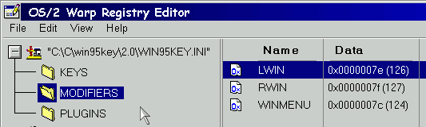

In fact Alex Samorukov have created very useful configuration tool. It still beta so we're waiting for his kindly permission to publish it.
For example if you want to use left windoze key as modifier with the
name LWIN, just create following entry in "MODIFIERS" section :

Where 0x mean hexadecimal notation (126 in Dec)
You can omit scancode (just set it to 0) for 'standard' keys. Just
use mnemonic name, for example A for 'A' key. You can find special mnemonic
names in 3.3.
|
|
|||||||||||||||||||||||||||||||||||||||||||||||||||||||||||||||||||||||||||||||||||||||||
void EXPENTRYPluginFoo(int
argc, char * argv[])
{ HMQ hmqLocal=NULLHANDLE;
hmqLocal=WinCreateMsgQueue(WinQueryAnchorBlock(HWND_DESKTOP), 0);
WinMessageBox(HWND_DESKTOP,HWND_DESKTOP,
"Hello
world!", "PluginFoo", 11,
MB_OK | MB_MOVEABLE
| MB_INFORMATION);
if(hmqLocal!=NULLHANDLE)
{ WinDestroyMsgQueue(hmqLocal);
}
}
| 0.21 | ctrl-shift-left.win.key=shutdown system
remove.cmd - uninstall script added |
| 0.23 | Russian support added |
| 0.25 | Spanish support added
(Jordi Nadal i F bregas <jornadal@redestb.es>) install/remove scripts modified (Louis Mckinley <Mckinley.Louis@ic.gc.ca>) |
| 0.26 | Dutch support added
(Daniel Jacobs) |
| 0.27 | NLS |
| 0.29 | NLS |
| 0.30 | Minor bug fixed |
| 0.31 | Feature added |
| 0.32 | Italian support added. (Sergio Trovarelli |
| 2.0 b1 | First 2.0 beta |
| 2.0 b2 | Key processing algorithm changed |
| 2.0 b3 | Menu added. Re-read config added |
| 2.0 b4 | realloc/free bug |
| 2.0 b5 | Key processing algorithm changed |
| 2.0 b6 | Mnemonic names added. Semaphore removed. |
| 2.0 b7 | OpenObject plugin semaphore added |
| 2.0 b8 | OpenObject plugin message removed. Memory allocation for event firing thread added (shame on me). Semaphore removed. |
| 2.0 b9 | Mod. names now case independent. A lot of little bugs fixed. Window pos and size saving added. Volume foo added. |
| 2.0 b10-b12 | Reload doesn't 'free' modifiers buffer. A lot of bugs fixed. |
| 2.0 b13-b14 | Attempt to 'free' unallocated memory (sys3175).
Doesn't 'free' allocated memory. <g> Conflicts with PMMail, Netscape etc. fixed. (os/2 sucks) Object desktop dll added but still not working ;) And (as usual) a lot of minor bugs fixed, such as 'k6^' instead 'k6' PM configuration tool added! |
| 2.0 b15 | New parameter - use key presses instead releases. It tells w95k to
fire event on key down instead default behavior (event fires when key releases)
Binaries has been moved to 'bin' dir (by Alex) A lot of new bugs added ;) Workaround for OpenObject foo (opened object was not at the top, move manually) |
| 2.0 b16 | Minor bug : event firing for released keys when configured to use key presses instead releases. |
| 2.0 b17 | New parameter for OpenObject plugin |
| 2.0 | "File" menu items added to system menu. |
| 2.10 | New foo MinimizeAll added
Minor bug (trap 0e and hdd crash) fixed //Just kidding of course ;) |
Best regards
Vik